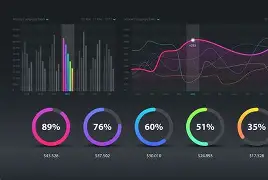
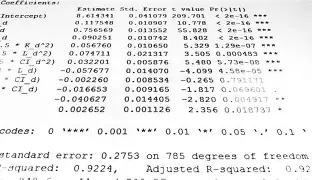

James Kariuki
Data Analyst with 3 years of professional experience in data analysis, econometrics, and statistical modeling. Background in Economics, Mathematics, and Statistics with strong expertise in transforming data into actionable insights.

Data Analytics
3+ years of experience transforming raw data into actionable insights.

Econometrics
Regression, panel data, time series, and forecasting techniques.
Statistics
Probability theory, hypothesis testing, and statistical modeling.